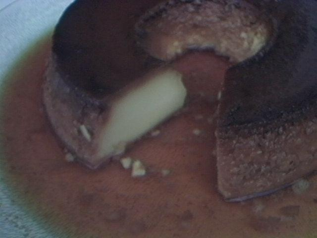

Receita de Pudim
Doce, cremoso e clássico — fácil de preparar em casa.
Jogo do Pudim
Controle o pudim: pressione Espaço / ↑ para pular. Evite os obstáculos e marque pontos!
0
Ingredientes
- 1 lata de leite condensado
- 2 medidas da lata de leite
- 3 ovos
- 1 xícara de açúcar (para a calda)
Modo de Preparo
- Preaqueça o forno a 180°C.
- Em uma panela, derreta o açúcar até formar uma calda dourada.
- Despeje a calda em uma forma de pudim.
- No liquidificador, bata o leite condensado, o leite e os ovos.
- Despeje a mistura na forma caramelizada.
- Cubra com papel alumínio e asse em banho-maria por cerca de 1 hora.
- Deixe esfriar e desenforme.
Quiz: O quanto você sabe sobre Pudim?
Responda as perguntas abaixo e veja sua pontuação.